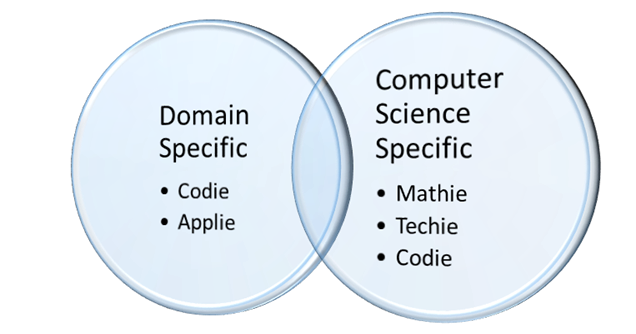
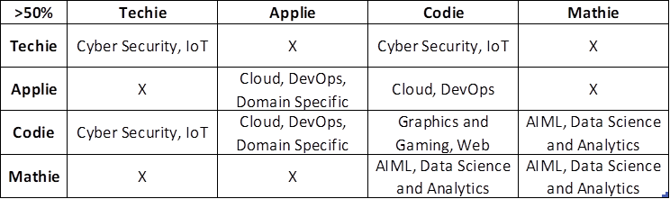

Specializations! Specializations! Specializations!
Delving into computer science education? The vastness in the area compels us to choose a focussed direction while learning. You can't learn everything but certainly you can target a focussed area and be a master in it.
The last decade and this have seen universities offering Computer Science courses in specialization oriented fashion. Here the core computer science degree is provided with add-ons/substitutions with certain specialization subjects. We can see specialization courses in two basic categories.
1. Domain Specific and,
2. Computer Science Specific.
The domain specific courses are designed to render a particular industry sector. For example, Healthcare and Services, Banking, Media, etc. The Computer Science specific courses are designed to address the more technical branches of computer science. We can call them as streams of computer science. For example, Cyber Security, AIML, IoT, etc. These specializations offerings are good but, understandably it is a difficult choice for a kid to make and that too just in the beginning!
The Dilemma
The Dilemma of choosing a specialization pops up onto every Computer Science aspiring student. Major Specializations that seem prevalent in many Institutes are: Cyber Security and Forensics, AIML, IoT, Data Science, Big Data, Cloud Computing, DevOps, Healthcare, Business analytics, Graphics and Gaming, E-commerce, full-stack, Blockchain, Banking Financial Services and Insurance, open source and open standards, etc. With so many options in hand, it sometimes overflows... and then you get drowned. It is always advised that the students must explore these areas and then make a decision. But, that's not always going to work. Sometimes we may falter in understanding the area very much or we may get wrong impression about its scope and coverage. For example, a student may find graphics and gaming attractive because it gives an impression of art and design. But, it may not be the full picture. It would be having lots of coding, technology and science which you may not be interested in so much. One would advise strengths, weaknesses, opportunities, and threats (SWOT) analysis on self, but, that would be difficult and lead inaccurate choices if you get disarrayed.
TECHIE? APPLIE? CODIE? MATHIE?
The TECHIE, CODIE, APPLIE and, MATHIE Approach
I would suggest students to analyse your SWOT centring yourself inwards using a technique that is presented here as the Techie, Applie, Codie and, Mathie approach. (Pardon me for choosing these obnoxious terms. Just wanting to use relatable and rhyming terms.) Everyone knows him/herself better than anyone. If one works with the understanding of his/her strengths, weaknesses and likings, then you are bound to succeed. Let's remove the common part of SWOT. That is, the Opportunities and Threats. That is like a common denominator. I assume you have made a final choice to get into computing field understanding/weighing the opportunities and threats per se.
Lets know these terms!
Techie: Technology driven person.
Applie: Person who likes building/using software applications.
Codie: Person fond of coding.
Mathie: One who is good at maths.
I strongly feel that the above traits surfaces by the time you clear out of your senior school. By the time you would have touched basic aspects of computers, programming and applications. Now, one can be a mix of all or some of these. Surely a person may be a techie kind i.e he is fond of devices, likes to know the internals, and likes to probe into wirings, always craving for what is the new technology on the shelf. But, he may be not that much good or interested in Maths. Similarly, a student likes working on several applications or is a problem solver. Likes to listen to people and think about making apps for them. He likes using application development platforms, has an intuitive understanding of the architectural aspects of software, he is fond of web and its features. He can call himself an Applie! A Codie will be one who can identify himself too easily. If you like sitting late hrs on some code. Thinks in loops and conditions, Likes algorithmic approaches, and enjoys debugging code of his friends. You are a codie! A Mathie is a mathy!! He likes Maths. He is good at algebra, Number systems and theory, Likes equations, likes using representations and depictions in form of models or equations, Likes, matrices and operations, and understands probability and statistics. Well, you are a Mathie!
Choose your best fit
Based on the above two categories (domain Specific and Computer Science Specific), one can map these traits as shown in the figure.

We can have specific mapping based on weightage you give yourself to the traits. Like, if weigh yourself heavily on Techie your tendency is towards specializations like, Cyber Security, IoT. If you weigh high on Mathie, you tend more towards AIML, Data Science and Analytics. If you weigh in Applie, you tend more towards Cloud, DevOps. You weigh more towards codie you should be good in Graphics and Gaming, Web Development, Domain Specific courses. Important to add here is that Codie aspect is required in almost all specializations. So, do not think you can get away from it. In fact each specializations are a blend of these traits. Core computer science subjects are always there and very important for every CS student.
A simple formulae in choosing your vertical is, if you rate yourself more than 50% in any one trait, then you are that. Choose the appropriate specialization. If you rate yourself as Techie and Codie more than 50% then you are a Techie. If you rate yourself more than 50% as Mathie and Codie Then you are a Mathie. If you rate yourself more than 50% as Applie and Codie then you are an Applie. Just for assistance here is the chart to guide yourself.

Disclaimer: Its just an advice. You are the best judge for yourself!!. Lastly, take my words... Follow your heart...
Post Created on October 28th 2024.
Dr. Ajay Prasad is a Professor of Computer Science at UPES, India.
Images courtsey chatgpt.com